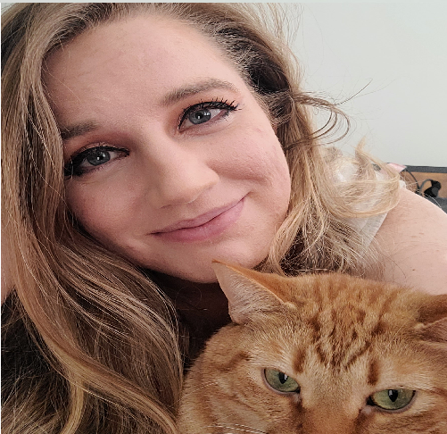

Just a girl hanging out with my local government approved psyop.
Personal Background: Born and raised in Kings Mountain. Went to UNCW for four years but decided that wasn’t enough for me, so now I’m back for Round Two: The Electric Boogaloo.
Professional Background: Deputy Lab Coordinator
Academic Background: B.S. in Chemistry with minor in Psychology. Currently pursuing B.S. in Computer Science with a concentration in Software Engineering
Background in this Subject: Dabbled in learning using codeacademy in the past but nothing extremely fancy.
Primary Computer Platform: Windows
Courses I'm Taking & Why:
ITSC 4230 - Introduction to Game Design & Development - I’ve always had a interest in games, and over the time I’ve wanted to craft my own.
ITCS 3153- Introduction to Artificial Intelligence - With the advancements in AI over the past few years and my interest in the human desire to form bonds with AI, it was only natural to take this course.
ITCS 3155 - Software Engineering - I want to learn about building strong systems that won’t fail in collaboration with others.
ITSC 3146: Intro Oper Syst & Networking - It’s important to know and understand the machinery and system basis I will be utlizing throughout my career.
ITIS 3135: Web-Based Application Design & Development - Companies everywhere need websites if they want to appeal to large masses in today’s market. If I can provide that efficiently and effectively, I will receive money and potential connections, and I think that’s pretty neat.
ITIS 3310: Software Arch & Design - Integration of new developments in software engineering and computer science as a whole happen frequently, so learning the best way to introduce newer concepts and ideas into preexisitng ones are important.
Funny/Interesting Item to Remember me by: I have vague suspicions the CIA hired my cat to wake me at random intervals in the night in fear of me growing too strong. It wouldn’t even be the first time they used a cat for spying.
I'd also like to Share: If I don’t make it out of this semester, remember me as I was not as I am.